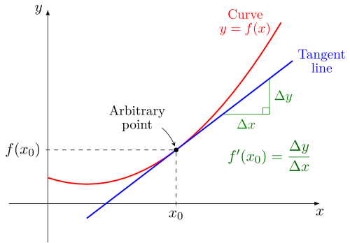
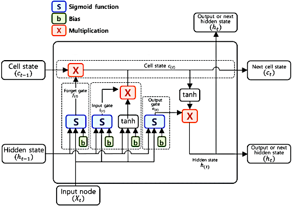
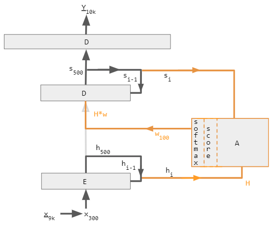

Listening to the latest buzz, you'll notice just how many people are talking about artificial intelligence these days. About how it could change the world or maybe destroy everything we hold dear. A lot of experts seem divided on this, with some arguing AI has the potential to solve many serious challenges we face and others making the case that some degree of caution ought to be exercised.
More recently, even the White House joined in on the subject with an Executive Order from the President of the United States of America; with the expectation that this was a matter of vital national interest.
So how did we get here?
Well, this might sound silly, but it all starts with trees.
In particular, tree data structures. If you're familar with a flow chart or binary tree, then take that idea and use as a way to evaluate the possible outcomes of some situation. Then it becomes what is known as a decision tree.
Many years ago I used to work a now defunct machine-learning oriented startup, Sightline Innovations, where customers would present their problems to us and in turn our team would translate their challenge into something that ML could solve to some degree of precision. These mostly involved pattern recognition systems of images or data mining of large bodies of text or data.
Typically this involved software like XGBoost which allows for the easy creation of tree-based decisioning that has some very basic ability to learn. This methodology is known as gradient boosting. This produces a data structure that when moving up or down the nodes, leads to a local minimum or local maximum, optimizing the function towards whatever goal was in mind; e.g. is this a picture an image of a dog? Does this body of literature have information related to the common types of cancer?
Gradient boosting is nice but yields results that are more like a refinement and very much unlike real human learning. In many ways, not dissimilar to a human being reading a book on Calculus and then summarizing the contents.
Whereas what you might actually want at the end of that process is a human that can solve real-world problems with the Calculus it learned from the book.

So this really puts the desire into focus. We want to be able toss data of any type into a machine and have it deeply learn the concepts. Sound familar?
Actually if you think about it, the most intriguing aspects of a gradiented tree is two-fold:
Hmm... yet with our tree concept it has to work for the entire length of the path it travels. It passes by and evaluates each information chunk until we get our final output. Maybe even forgetting chunks along the way that it determines aren't relevant and doesn't need?
So a type of "long" short term memory, if you will.
If you've ever studied the subject at all or even heard about these topics briefly, you might have come across this concept, to which academics and engineers cleverly call LSTM because of the reasons mentioned above.
Typically the way it is implemented is as follows:

Cells!
Curiously enough, humanity has spent all of this effort to recreate biological intelligence in a machine and the place we end up at is a kind of "mathematical" cell.
A very nice and a very unexpected outcome.
Very unexpected in the sense that we thought we were just optimizing a tree yet we accidentally built a cell.
Also very nice too, since this is the probably the correct way to think of intelligence, or at least, closer to underlying reality than our earlier misconceptions.
To recap where we are now:
So creating a "cell" that iterates over a network of "chunks" is a pretty good improvement over climbing the ol' binary tree. Doubly so if the chunks are already sorted in advance so that we don't need to waste time every instant we want to start up our model.
Since this sortation effectively is a hint of what direction the cell might end up evaluating, we can think of it as a type of "training" that the model practices on prior to us using it. The larger and better and richer the training data, the more likely we get the desired outcome.
We'll want that as an essential feature going forward, otherwise it'll just take too long to do anything.
Okay, suppose now we got our chunks networked and trained on data relevant to the topic at hand and we got a model that can evaluate using gates and retain state throughtout the decision path.
Let's try this out on a simple sentence where we force the model trained on English literature to attempt to complete this sentence and guess what the words ought to be:
The quick brown fox __ over the lazy __.
A clever human might identify "fox" as a noun and realize that whatever comes after it must be a verb, in particular, a verb that makes sense in conjuction with "over". For the word "lazy" the human might determine this is an adjective and thus whatever word comes after it must be noun.
For our model, it begins by reading in the sentence where it reads in the words and attempts to classify them based on what it currently knows. Unlike the human, it may or may not know what a noun or verb is (though in theory you could make do so), but since it has trained on basic English sentence structure, it can read through the network of chunks it has.
Say for instance the path it goes down is something like:
(starts)-->(sings)-->(television)-->(jumps)
As "starts over" is not syntactically wrong and is present in the training text, the cell grabs that.
Then it goes to "sings" and ignores it since it is less common in the data then "starts".
On to "television" and since none of the data ever has "television over" present, the model continues on.
Finally the model gets to "jumps" and realizes that it is even more common than "starts" so thus it retains "jumps" and drops "starts", yielding a final state of "jumps".
Success, our model has figured it out!
While in theory what is presented about does work in some capacity, you may notice that there are actually two problems with this approach:
This is bad and shows how limited an approach this all is. In spite of the similarities mentioned earlier, really it is very much unlike how a human would think.
A human would probably try to make a sort of "judgment call" on how relevant a word is drawing from a pool of long-term and short-term memory to "classify" where it could be used. Maybe making adjustments over time as the human gets older and more experienced.
This is to say that human would pay "attention" to how the words would be used; both now and in the past. Then they would weigh in based on the frequency of the word.
A sort of cognitive context or attention if you will.
Huh, isn't that interesting?
What if we did something similar; instead of having the model frequency, we'd do training on relevant datasets where the use of the word was correct, and then assign a kind of "correctness" score which would function as a kind of weight.
Let's try the earlier example again but this time we've trained the model on a dataset and assigned a weight.
[(starts:2), (sings:1), (television:0), (jumps:37)]
As an optimization, no need to sequentially hop from node to node. We'll dump it all into memory and for-loop through all of it and spawn one thread per element or dimension.
Since we can't use "threads" in the normal sense, what we'd have to do is setup a collection of cells called "neurons" that would climb up and down throughout the nodes in a bidirectional fashion. This would mean that output from one neuron could affect the input from another, leading to what might be called a recurrent state.
Like biology, cell specialization is key building complex organisms.
Some of these neurons would be encoders, which is to say they would start by "setting the tone" and would initialize the attention context. As the model runs, the encoder might pass along hints to the attention unit to ensure the newly learned information that retained is the most precise information.
Other neurons would be decoders, which is to say they would use the context present in the attention unit to make a decision based on their present state.
Having done this, our attention-enhanced model is suddenly both faster and parallel.

This is great!
Mind you, storing this extra weight data does require additional hard drive space, but these days, that's hardly much of a concern in world where terabytes can be had for mere dollars.
Also of note is that if you wanted to run this continuously or needed to do an incredible volume of text or image data, well, it would appear that you'd need a lot of memory. Perhaps a lot of processors or GPUs too, for handling the multi-thread workloads.
Hmm... well this is kind of a bummer, but given the price and performance of CPUs and GPUs continues to grow, maybe this trade-off isn't so bad.
Ultimately it remains to be seen whether the supply for compute is able to reach the demand for compute.
Thus, with a general lack of compute and memory availability to simply handle all datasets this way, wouldn't it be great if there was some way to optimize this further?
The answer lies within the idea of dimensionalizing n-grams and performaning matrix transforms on these values, which is to say, transformer models.